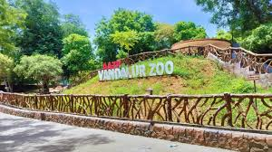
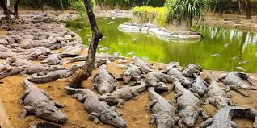
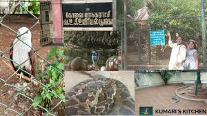
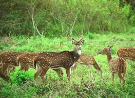
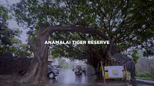
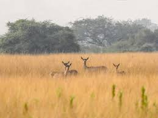

Arignar Anna Zoological Park
Vandalur, Chennai

Madras Crocodile Bank
Near Mahabalipuram

Amirthi Zoological Park
Vellore

VOC Park and Zoo
Coimbatore

Mudumalai Wildlife Sanctuary
The Nilgiris

Anamalai Tiger Reserve
Pollachi, Coimbatore

Vallanadu Blackbuck Sanctuary
Thoothukudi